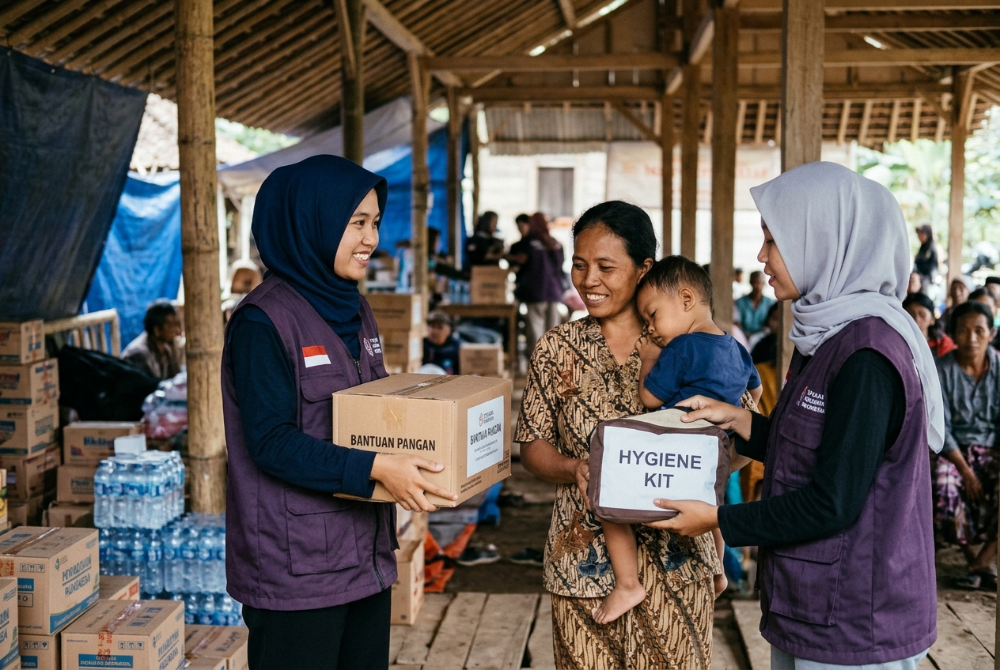

<!-- ========================================================
  WIDGET 5 PILAR PROGRAM LAZ WANITA ISLAM (ELEMENTOR READY)
  PANDUAN GANTI FOTO:
  1. Upload foto Anda ke menu WordPress: Media > Tambah Baru.
  2. Salin link berkas foto tersebut (misal: https://laz.wanitaislam.or.id/wp-content/uploads/...jpg).
  3. Cari teks "GANTI FOTO PILAR" di bawah ini, lalu tempelkan link Anda di dalam atribut src="...".
  Rekomendasi ukuran foto: 1200 x 800 piksel (Rasio 3:2 atau 16:9), format JPG/WebP (maks 300KB).
======================================================== -->

<link rel="stylesheet" href="https://cdnjs.cloudflare.com/ajax/libs/font-awesome/6.4.0/css/all.min.css">
<style>
  :root {
    --lilac-primary: #54366F;
    --lilac-dark: #3D2452;
    --lilac-light: #F5F0FA;
    --lilac-soft: #D9C9E8;
    --gold-accent: #C5A46D;
    --gold-gradient: linear-gradient(135deg, #ECC874 0%, #C59A3F 50%, #9E7422 100%);
    --gold-glow: 0 4px 15px rgba(197, 154, 63, 0.4);
    --gold-light: #FDF7E7;
    --text-dark: #22222B;
    --text-muted: #666675;
    --bg-gray: #F8F9FA;
    --border-color: #E6E4EA;
    --font-heading: 'Plus Jakarta Sans', sans-serif;
    --font-body: 'Plus Jakarta Sans', sans-serif;
  }

  .program-section-widget {
    font-family: var(--font-body);
    color: var(--text-dark);
    background: #FFFFFF;
    padding: 60px 20px 80px 20px;
    max-width: 100%;
    margin: 0 auto;
    box-sizing: border-box;
  }

  .program-widget-container {
    max-width: 1200px;
    margin: 0 auto;
  }

  /* HEADER SECTION */
  .program-widget-header {
    text-align: center;
    max-width: 760px;
    margin: 0 auto 45px auto;
  }

  .program-widget-badge {
    display: inline-flex;
    align-items: center;
    gap: 8px;
    background: var(--lilac-light);
    color: var(--lilac-primary);
    font-size: 12.5px;
    font-weight: 700;
    padding: 6px 16px;
    border-radius: 20px;
    border: 1px solid var(--lilac-soft);
    margin-bottom: 14px;
    text-transform: uppercase;
    letter-spacing: 0.5px;
  }

  .program-widget-title {
    font-family: var(--font-heading);
    font-size: 34px;
    font-weight: 800;
    color: var(--lilac-dark);
    margin: 0 0 14px 0;
    line-height: 1.25;
  }

  .program-widget-title span {
    color: var(--gold-accent);
  }

  .program-widget-subtitle {
    font-size: 15px;
    color: var(--text-muted);
    line-height: 1.6;
    margin: 0;
  }

  /* GRID 5 PILAR */
  .program-widget-grid {
    display: grid;
    grid-template-columns: repeat(auto-fit, minmax(340px, 1fr));
    gap: 28px;
  }

  .pilar-card {
    background: #FFFFFF;
    border: 1px solid var(--border-color);
    border-radius: 18px;
    overflow: hidden;
    display: flex;
    flex-direction: column;
    transition: all 0.3s ease;
    box-shadow: 0 4px 20px rgba(84, 54, 111, 0.04);
  }

  .pilar-card:hover {
    transform: translateY(-6px);
    border-color: var(--lilac-primary);
    box-shadow: 0 16px 36px rgba(84, 54, 111, 0.12);
  }

  /* SLOT GAMBAR / MEDIA FOTO */
  .pilar-img-container {
    width: 100%;
    height: 220px;
    background: linear-gradient(135deg, #3D2452 0%, #54366F 100%);
    position: relative;
    overflow: hidden;
  }

  .pilar-img-container img {
    width: 100%;
    height: 100%;
    object-fit: cover;
    display: block;
    transition: transform 0.4s ease;
  }

  .pilar-card:hover .pilar-img-container img {
    transform: scale(1.06);
  }

  .pilar-badge-tag {
    position: absolute;
    top: 14px;
    left: 14px;
    background: rgba(84, 54, 111, 0.88);
    backdrop-filter: blur(8px);
    -webkit-backdrop-filter: blur(8px);
    color: #FFFFFF;
    font-size: 11.5px;
    font-weight: 700;
    padding: 5px 12px;
    border-radius: 20px;
    border: 1px solid rgba(197, 164, 109, 0.5);
    display: inline-flex;
    align-items: center;
    gap: 6px;
    z-index: 2;
  }

  .pilar-body {
    padding: 24px;
    display: flex;
    flex-direction: column;
    flex-grow: 1;
  }

  .pilar-name {
    font-family: var(--font-heading);
    font-size: 19px;
    font-weight: 800;
    color: var(--lilac-dark);
    margin: 0 0 10px 0;
    line-height: 1.35;
  }

  .pilar-desc {
    font-size: 13.5px;
    color: var(--text-muted);
    line-height: 1.6;
    margin: 0 0 18px 0;
  }

  /* POIN INTERVENSI / KEUNGGULAN */
  .pilar-points {
    background: var(--lilac-light);
    border-radius: 12px;
    padding: 14px 16px;
    margin-bottom: 22px;
    border: 1px solid var(--lilac-soft);
  }

  .pilar-points-title {
    font-size: 12px;
    font-weight: 800;
    color: var(--lilac-primary);
    text-transform: uppercase;
    letter-spacing: 0.5px;
    margin-bottom: 8px;
    display: block;
  }

  .pilar-points ul {
    list-style: none;
    margin: 0;
    padding: 0;
  }

  .pilar-points li {
    font-size: 12.5px;
    color: #4A4A5A;
    line-height: 1.5;
    margin-bottom: 6px;
    position: relative;
    padding-left: 18px;
  }

  .pilar-points li:last-child {
    margin-bottom: 0;
  }

  .pilar-points li::before {
    content: "✓";
    position: absolute;
    left: 0;
    top: 0;
    color: var(--gold-accent);
    font-weight: 800;
    font-size: 13px;
  }

  /* TOMBOL DONASI / AKSI */
  .pilar-footer {
    margin-top: auto;
    padding-top: 14px;
    border-top: 1px solid var(--border-color);
  }

  .btn-pilar-action {
    display: inline-flex;
    align-items: center;
    justify-content: center;
    gap: 8px;
    width: 100%;
    padding: 11px 18px;
    border-radius: 10px;
    background: var(--lilac-primary);
    color: #FFFFFF;
    text-decoration: none;
    font-size: 13px;
    font-weight: 700;
    transition: all 0.25s ease;
    box-shadow: 0 4px 12px rgba(84, 54, 111, 0.2);
  }

  .btn-pilar-action:hover {
    background: var(--lilac-dark);
    box-shadow: 0 6px 18px rgba(84, 54, 111, 0.35);
    color: #FFFFFF;
  }

  .btn-pilar-action i {
    color: var(--gold-accent);
  }

  @media (max-width: 768px) {
    .program-widget-title { font-size: 26px; }
    .program-widget-grid { grid-template-columns: 1fr; }
    .pilar-img-container { height: 200px; }
  }
</style>

<section class="program-section-widget" id="program-unggulan">
  <div class="program-widget-container">
    
    <!-- HEADER -->
    <div class="program-widget-header">
      <div class="program-widget-badge">
        <i class="fa-solid fa-hand-holding-heart"></i> Program Berkelanjutan
      </div>
      <h3 class="program-widget-title">5 Pilar Program <span>LAZ Wanita Islam</span></h3>
      <p class="program-widget-subtitle">
        Menyalurkan amanah zakat, infak, sedekah, dan wakaf (ZISWAF) secara profesional, tepat sasaran, dan berkelanjutan untuk mengangkat martabat mustahik perempuan serta mengokohkan ketahanan keluarga di seluruh Indonesia.
      </p>
    </div>

    <!-- GRID 5 PILAR PROGRAM -->
    <div class="program-widget-grid">

      <!-- ==========================================
           PILAR 1: KEMANDIRIAN EKONOMI
      ========================================== -->
      <article class="pilar-card">
        <div class="pilar-img-container">
          <span class="pilar-badge-tag"><i class="fa-solid fa-store"></i> Pilar 1: Ekonomi</span>
          <!-- [GANTI FOTO PILAR 1 DISINI] -->
          
        </div>
        <div class="pilar-body">
          <h4 class="pilar-name">Kemandirian Ekonomi & UMKM Ibu Tangguh</h4>
          <p class="pilar-desc">
            Suntikan modal bergulir qardhul hasan (bebas bunga & bebas riba) serta pendampingan usaha mikro rumahan untuk memutus jeratan rentenir keliling dan pinjol ilegal.
          </p>
          <div class="pilar-points">
            <span class="pilar-points-title">Fokus Intervensi:</span>
            <ul>
              <li>Permodalan alat usaha & bahan baku UMKM ibu binaan.</li>
              <li>Pelatihan literasi keuangan syariah & manajemen kas rumah tangga.</li>
              <li>Kelompok usaha bersama berbasis majelis taklim perempuan.</li>
            </ul>
          </div>
          <div class="pilar-footer">
            <a href="tunaikan-zakat.html" class="btn-pilar-action">
              <i class="fa-solid fa-heart"></i> Dukung Usaha Ibu Tangguh
            </a>
          </div>
        </div>
      </article>

      <!-- ==========================================
           PILAR 2: PENDIDIKAN GENERASI
      ========================================== -->
      <article class="pilar-card">
        <div class="pilar-img-container">
          <span class="pilar-badge-tag"><i class="fa-solid fa-graduation-cap"></i> Pilar 2: Pendidikan</span>
          <!-- [GANTI FOTO PILAR 2 DISINI] -->
          
        </div>
        <div class="pilar-body">
          <h4 class="pilar-name">Pendidikan Generasi & Beasiswa Anak Negeri</h4>
          <p class="pilar-desc">
            Memastikan tidak ada anak mustahik yang terputus pendidikannya. Menyediakan beasiswa yatim dhuafa, ruang belajar ramah anak, dan sekolah darurat pascabencana.
          </p>
          <div class="pilar-points">
            <span class="pilar-points-title">Fokus Intervensi:</span>
            <ul>
              <li>Beasiswa SPP & uang saku santri/pelajar yatim dhuafa.</li>
              <li>Pendirian sekolah darurat tenda & pojok baca ceria di pelosok.</li>
              <li>Distribusi paket perlengkapan sekolah lengkap & seragam baru.</li>
            </ul>
          </div>
          <div class="pilar-footer">
            <a href="tunaikan-zakat.html" class="btn-pilar-action">
              <i class="fa-solid fa-heart"></i> Bantu Pendidikan Anak Dhuafa
            </a>
          </div>
        </div>
      </article>

      <!-- ==========================================
           PILAR 3: KESEHATAN IBU & ANAK
      ========================================== -->
      <article class="pilar-card">
        <div class="pilar-img-container">
          <span class="pilar-badge-tag"><i class="fa-solid fa-stethoscope"></i> Pilar 3: Kesehatan</span>
          <!-- [GANTI FOTO PILAR 3 DISINI] -->
          
        </div>
        <div class="pilar-body">
          <h4 class="pilar-name">Kesehatan Ibu, Balita & Pencegahan Stunting</h4>
          <p class="pilar-desc">
            Intervensi nutrisi terpadu pada 1.000 Hari Pertama Kehidupan (HPK). Menjangkau balita wasting/stunting, pemeriksaan gizi ibu hamil, dan layanan kesehatan gratis dhuafa.
          </p>
          <div class="pilar-points">
            <span class="pilar-points-title">Fokus Intervensi:</span>
            <ul>
              <li>Pemberian Makanan Tambahan (PMT) nutrisi tinggi balita.</li>
              <li>Pemeriksaan USG & paket vitamin penambah darah ibu hamil.</li>
              <li>Skrining medis lansia dhuafa & sosialisasi sanitasi higienis.</li>
            </ul>
          </div>
          <div class="pilar-footer">
            <a href="tunaikan-zakat.html" class="btn-pilar-action">
              <i class="fa-solid fa-heart"></i> Donasi Nutrisi Ibu & Balita
            </a>
          </div>
        </div>
      </article>

      <!-- ==========================================
           PILAR 4: KEMANUSIAAN & BENCANA
      ========================================== -->
      <article class="pilar-card">
        <div class="pilar-img-container">
          <span class="pilar-badge-tag"><i class="fa-solid fa-shield-heart"></i> Pilar 4: Kemanusiaan</span>
          <!-- [GANTI FOTO PILAR 4 DISINI] -->
          
        </div>
        <div class="pilar-body">
          <h4 class="pilar-name">Tanggap Bencana & Perlindungan Keluarga</h4>
          <p class="pilar-desc">
            Aksi cepat tanggap darurat bencana alam, kebakaran hutan, dan krisis sosial dengan pendekatan humanis ramah kebutuhan spesifik perempuan, bayi, serta lansia.
          </p>
          <div class="pilar-points">
            <span class="pilar-points-title">Fokus Intervensi:</span>
            <ul>
              <li>Dapur umum higienis khusus gizi balita & ibu menyusui di posko.</li>
              <li>Distribusi hygiene kit perempuan, popok, susu, dan sembako darurat.</li>
              <li>Bantuan tabung oksigen, masker medis, dan posko karhutla.</li>
            </ul>
          </div>
          <div class="pilar-footer">
            <a href="tunaikan-zakat.html" class="btn-pilar-action">
              <i class="fa-solid fa-heart"></i> Salurkan Bantuan Kemanusiaan
            </a>
          </div>
        </div>
      </article>

      <!-- ==========================================
           PILAR 5: DAKWAH & KETAHANAN KELUARGA
      ========================================== -->
      <article class="pilar-card">
        <div class="pilar-img-container">
          <span class="pilar-badge-tag"><i class="fa-solid fa-mosque"></i> Pilar 5: Dakwah & Advokasi</span>
          <!-- [GANTI FOTO PILAR 5 DISINI] -->
          
        </div>
        <div class="pilar-body">
          <h4 class="pilar-name">Ketahanan Keluarga Sakinah & Syiar Islam</h4>
          <p class="pilar-desc">
            Membangun keluarga sakinah, mawaddah, warahmah melalui penguatan spiritual ibu, pembinaan majelis taklim terpencil, konseling keluarga Islami, dan advokasi perempuan.
          </p>
          <div class="pilar-points">
            <span class="pilar-points-title">Fokus Intervensi:</span>
            <ul>
              <li>Binaan majelis taklim ibu-ibu & pemberantasan buta aksara Qur'an.</li>
              <li>Pusat konseling parenting Islami & mediasi ketahanan rumah tangga.</li>
              <li>Advokasi hak hukum perempuan dhuafa & sosialisasi zakat produktif.</li>
            </ul>
          </div>
          <div class="pilar-footer">
            <a href="tunaikan-zakat.html" class="btn-pilar-action">
              <i class="fa-solid fa-heart"></i> Dukung Dakwah & Keluarga Sakinah
            </a>
          </div>
        </div>
      </article>

    </div>

  </div>
</section>
